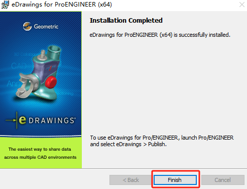

HCL许可证服务器指南
获得许可文件
获得服务器信息
生成浮动许可证所需的信息。Glovius浮动许可证基于许可证服务器的机器地址。许可服务器网络名称也是必需的。按照以下步骤获取“机器地址”。打开命令提示符CMD，输入：
1 | ipconfig /all>hostinfo.txt |
‘hostinfo.txt’包含生成license所需的信息。将此文件连同您的订单信息发送至sales@glovius.com或glovius.support@hcl.com。浮动许可文件将在2个工作日内通过电子邮件发送给您。
生成许可文件
获得浮动许可文件后，在记事本中打开并保存成后缀是.lic的格式文件。许可证文件的内容如下所示:（注意：当用记事本保存文件时，请确保在“另存为类型”框中选择“所有文件”，这样就不会自动添加.txt扩展名）
1 | SERVER server-name 00823F752B89 27019 |
安装服务器
安装服务器
下载并运行Geometric License Server安装文件。License Server download to host the license:
https://glovius.blob.core.windows.net/installers/Support_material/HCLLicenseServer.exe
安装许可服务器工具指南。Instruction Guide to host the license on the server:
https://glovius.blob.core.windows.net/installers/Support_material/Floating_License_Configuration.pdf
（安装下载链接过期失效或需要新版本程序，你可以联系‘edrawings.support@hcl.com‘）
安装步骤如下：
单击“下一步”继续，
选择安装HCL License Server的安装目录（当然默认C盘路径也行）
选择许可文件，单击“下一步”。（安装时需要license文件。如果还没有收到许可证文件，可使用空许可证文件代替）
点击“安装”等待完成安装
完成

配置服务器
从【开始菜单 >程序>”中运行lmtools.exe实用程序Geometric License证服务器> lmtools】检查“配置使用”中的“服务/许可文件”选项卡上的LMTOOLS对话框中是否存在FLEXlm服务几何服务”选项。
1、单击配置服务
在“服务名称”下拉列表中，选择要用于管理许可证的服务几何。如果不存在服务名称，请输入需要管理license的服务名称（名称可以自己定义）。
注:如果您有一个以上的软件供应商我们浏览到许可证管理器守护进程(lmgrd.exe)的位置。默认位置为“C:\Program Files\Geometric License Server\bin”文件夹。
- lmgrd：上面注释的位置下lmgrd.exe文件
- license：（★重点）浏览到浮动许可证文件的位置。
- log：任意log文本，输入调试日志文件的路径和文件名。
选择“使用服务”。如果要在系统启动时自动启动lmgrd.exe，请选择“开机启动服务”。
单击“Save Service”将新配置保存在步骤4中创建的服务名称下。
2、单击“开始/停止/重读”页签
单击“启动服务器”，启动license服务器。消息“服务器”在“LMTOOLS”对话框底部显示“正在启动”。许可证服务器通常会在10到30秒内启动。为确保license管理器已正确启动，请在启动服务器后等待30秒，然后单击LMTOOLS的“服务器状态”页签，
3、单击“执行状态查询”
内容包括10秒返回结果。滚动到结果的底部，寻找类似于下面的一行:功能使用信息:用户总数为1个和被使用许可数量
安装客户端
安装
2
3选择包括publisher工具
4安装程序会自动找到proe程序
激活

迁移
旧设备停用
选择开始>项目Geometric/HCL License Server>打开“LMTOOLS”窗口。
在“服务/许可文件”页签中，选择“配置使用服务”选项，显示服务。“FLEXlm服务几何”将被列出。选择“FLEXlm Service Geometric”，并确保选中“LMTOOLS忽略许可证文件路径环境变量”。如果您为eDrawings 服务指定了不同的名称，请选择相应的名称。
单击“启动/停止/重读”页签，选择“停止服务器”，停止服务器。
获得新许可
从旧服务器拿到的许可文件.lic、新服务器的名称、MAC地址发到‘edrawings.support@hcl.com‘原厂支持邮箱，支持邮箱将回复新的许可文件
新设备激活
在新设备中安装服务器，并打开。选择开始菜单》Geometric/HCL License Server》打开“LMTOOLS”窗口。
单击“配置服务”选项卡，从“服务名称”下拉列表中选择要用于管理许可证的FLEXlm Service Geometric服务。浏览到新许可证文件的位置并选择许可证。单击Save Service保存新配置。（注意:如果有多个软件供应商使用FLEXlm进行许可证管理，则此下拉列表可能有多个选项。）
单击Save Service保存新配置。单击“开始/停止/重读”页签。启动服务
参考：
Floating License (geometricglobal.com)
[ug服务器许可证(LMTOOLS)配置_ug许可证设置-CSDN博客](https://blog.csdn.net/m0_70164415/article/details/133029176#:~:text=A 通过开始–程序–ug NX–NX 许可证工具—lmtools， B,直接打开ug的安装目录，找到许可证文件， 第二 点击 config service 进入lmtools配置选项)
Floating_License_Configuration.pdf (windows.net)https://products.geometricglobal.com/downloads/Glovius/Floating_License_Configuration.pdf)
Q&A
有官方错误资料的手册的FLEXnet Licensing Error Codes_flexnet licensing error:-2,40025-CSDN博客
错误:10061 “WinSock: Connection refused”。要纠正这个问题，您需要参考以下步骤。以下是在服务器机器上执行的步骤。
\1. 纠正服务配置中的任何错误，然后单击“保存服务”。
\2. 打开Services。并找到license服务。
\3. 右键单击许可证服务名称并选择Properties。
\4. 进入“登录”页签，确保已选择“本地系统”帐户，如下图所示。
\5. 重新启动license服务。
\6. 返回到LMTOOLS中的Server Status选项卡，并单击Perform Status Enquiry以验证许可证现在是否可用。
迁移：
本文概述了安装 Network License Manager (LMTOOLS) 并将其移植到新服务器所需的过程。
解决方案：
- 在新许可服务器上安装 LMTOOLS。 请查看以下步骤：
- 在 Windows 上安装 Network License Manager
- 在 Mac OS X 上安装 Network License Manager
- 在 Linux 上安装 Network License Manager
为 Autodesk 产品生成新许可文件。
注意：
这些许可文件硬编码为计算机的 MAC 地址和主机名，不能从一个系统移动到另一个系统。
配置 LMTOOLS 以使用新许可文件。
更新客户端计算机，并确保现有安装指向新服务器。
请参见：
常规许可：Windows 注册表项中的 ADSKFLEX_LICENSE_FILE 环境变量位置
。
- 右键单击“我的电脑”图标。
- 单击“高级”选项卡。
- 单击“环境变量”。
- 在“系统变量”窗口中，单击“新建”。
- 在“变量名”字段中，输入 ADSKFLEX_LICENSE_FILE
- 在“变量值”字段中，输入 @HOSTNAMEOFNEWSERVER
- 单击“确定”。
或者，可以修改位于 C:\Program Files\Autodesk\（对于 Autodesk 2016 产品及先前版本）和 C:\ProgramData\Autodesk\CLM\LGS*<产品密钥>*_2017.0.0.F（对于 Autodesk 2017 产品和更高版本）的 licpath.lic 文件，使其指向新许可服务器。对于 macOS 和其他软件版本，请参考：2017 和 2019 版本的 LICPATH.LIC 文件在哪里？
停用旧的许可服务器。